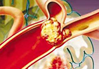
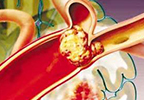

正确诊断急性嗜酸性粒细胞白血病 不想阅读可以直接咨询专家>>
急性嗜酸性粒细胞白血病是白血病的一种，很多人对这种疾病不是很了解，以至于患病而不自知，等到病情严重时才发现患病，那时在治疗就会增加许多阻碍。了解了正确诊断急性嗜酸性粒细胞白血病，在患病时经过诊断，就能够判断出患的是哪种疾病，以便能及时的治......[阅读全文]
患者关注阅读推荐疗法：五联养血融栓疗法

正确诊断急性嗜酸性粒细胞白血病 不想阅读可以直接咨询专家>>
急性嗜酸性粒细胞白血病是白血病的一种，很多人对这种疾病不是很了解，以至于患病而不自知，等到病情严重时才发现患病，那时在治疗就会增加许多阻碍。了解了正确诊断急性嗜酸性粒细胞白血病，在患病时经过诊断，就能够判断出患的是哪种疾病，以便能及时的治......[阅读全文]
